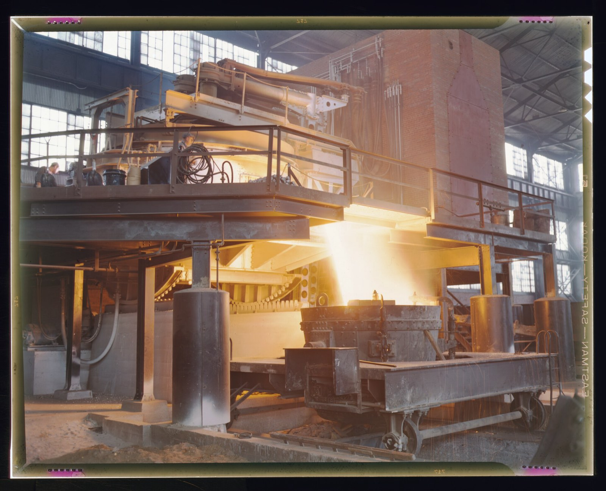

THM 202 · YEAR 2 · SEMESTER 1
Thermodynamics II — Cycles & Utilities
The plant utilities course wearing a thermodynamics badge: steam cycles, gas turbines, refrigeration, compressed air, and psychrometrics — sized, audited, and read from the utility deck of a real factory.
10 lessons · 1 in the Core 60 · Primary texts:
- NPTEL: Applied Thermodynamics (nptel.ac.in)
- Çengel-tradition cycle analysis via MIT OCW 2.005/2.006 materials
Rankine cycle
The ideal Rankine cycle on T–s coordinates with each device audited by the steady-flow energy equation. Efficiency levers: pressure, superheat, condenser vacuum. The backbone of every steam utility system.
- Trace steam through the four Rankine devices on a T–s diagram.
- Why does condenser vacuum matter so much to cycle efficiency?
Taught from — NPTEL: Applied Thermodynamics; video: LearnChemE (CU Boulder) — applied thermo
Real steam cycles: reheat, regeneration, losses
Reheat and feedwater heating and why plants pay for them. Component irreversibilities located on the h–s diagram. Heat rate as the operator's efficiency language.
- What does reheat buy besides efficiency?
- Why does feedwater heating raise cycle efficiency at all?
Taught from — NPTEL: Applied Thermodynamics; video: LearnChemE (CU Boulder) — applied thermo
Industrial steam systemsCore 60 · guide queued
Boilers, headers, PRVs, steam traps, and condensate return as one thermodynamic system. Steam quality, flash steam, and trap failure modes costed with the SFEE. The utilities lesson KDD-scale food plants and EQUATE-scale process plants both live by.
- A trap fails open on a 10 bar header: name the two distinct loss mechanisms it creates.
- Why is hot condensate worth far more returned than its water value alone?
- Explain flash steam: why does condensate partially vaporize crossing into low pressure?
Taught from — CORE 60 · B8 · NPTEL: Applied Thermodynamics; video: LearnChemE (CU Boulder) — applied thermo
Gas turbines and Brayton cycle
Brayton cycle with real component efficiencies. Pressure ratio trade-offs; intercooling and regeneration in outline. The prime mover behind Gulf power and large compression trains.
- Why does gas-turbine efficiency climb with pressure ratio — and what stops it?
- What fraction-scale of turbine work does the compressor consume, and why does it matter?
Taught from — NPTEL: Applied Thermodynamics; video: LearnChemE (CU Boulder) — applied thermo
Vapor-compression refrigeration
The refrigeration cycle on P–h coordinates; COP computed from enthalpies. Superheat and subcooling as health indicators. Chillers and cold stores — refrigeration as a food plant's beating heart.
- Read a refrigeration cycle on P–h: where are the four processes?
- Why do superheat and subcooling numbers diagnose charge and health?
Taught from — NPTEL: Applied Thermodynamics; video: LearnChemE (CU Boulder) — applied thermo
Psychrometrics and HVAC loads
Moist-air properties and the psychrometric chart worked fluently. Cooling-and-dehumidification processes traced. Gulf-summer design conditions and what they do to equipment ratings.
- What two properties fix a moist-air state on the psychrometric chart?
- Why does Gulf summer humidity punish cooling coils twice?
Taught from — NPTEL: Applied Thermodynamics; video: LearnChemE (CU Boulder) — applied thermo
Compressed air systems
Compression work, multistaging, and intercooling derived and priced. Receivers, dryers, and dew point. Leak economics — why compressed air is the plant's most expensive utility per joule.
- Why does multistaging with intercooling approach isothermal compression?
- Price a 1 mm leak conceptually: what makes compressed air so expensive?
Taught from — NPTEL: Applied Thermodynamics; video: LearnChemE (CU Boulder) — applied thermo
Combustion fundamentals
Stoichiometry, excess air, and flue-gas analysis. Heating values and combustion efficiency from stack measurements. Boiler tuning as applied chemistry.
- What does excess air do for combustion and against efficiency?
- Which flue-gas measurements reveal a burner running rich?
Taught from — NPTEL: Applied Thermodynamics; video: LearnChemE (CU Boulder) — applied thermo
Exergy analysis of utilities
Second-law accounting applied to boilers, heat exchangers, and throttles. Exergy destruction rankings as an audit's priority list. Where the utility bill actually leaks.
- Why is a throttle an exergy bonfire while being energy-neutral?
- Rank boiler, exchanger, throttle by typical exergy destruction.
Taught from — NPTEL: Applied Thermodynamics; video: LearnChemE (CU Boulder) — applied thermo
Utility system audit project
A guided paper audit of a representative factory utility deck: steam, air, chilled water. Balances closed, losses ranked, fixes proposed with payback estimates. The Tier-2 utilities lesson practiced end to end.
- Which three utility systems does a factory audit balance first, and why?
- What makes a payback claim from a utility audit credible?
Taught from — NPTEL: Applied Thermodynamics; video: LearnChemE (CU Boulder) — applied thermo